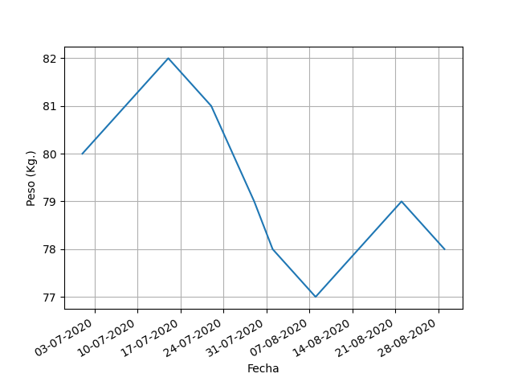
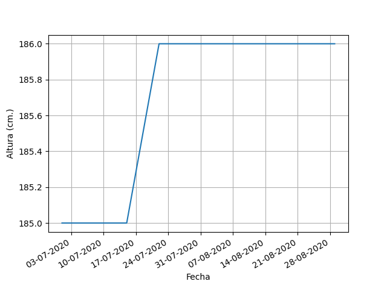
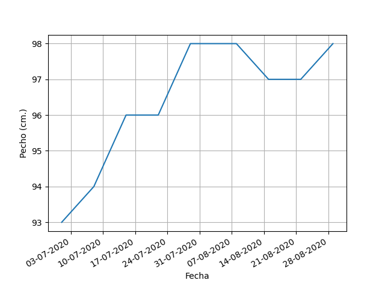
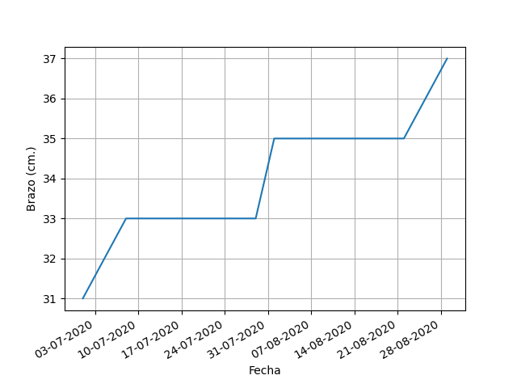
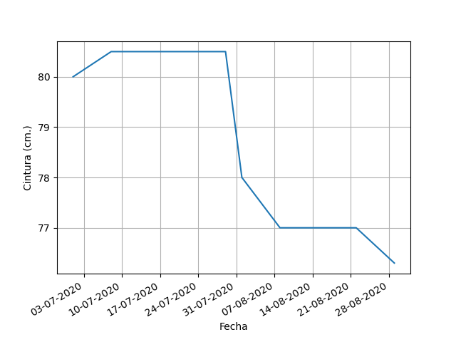
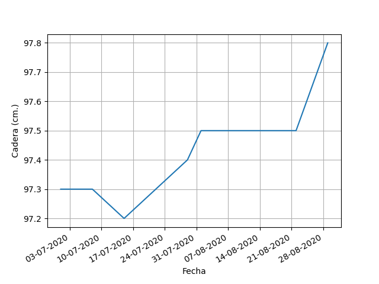
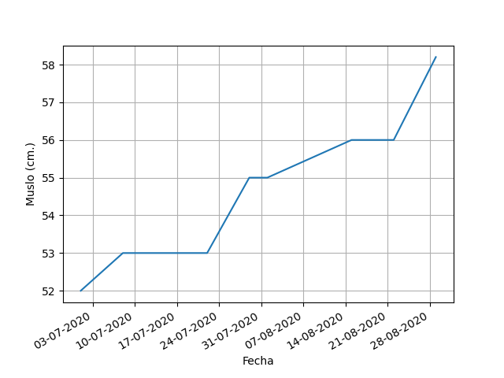
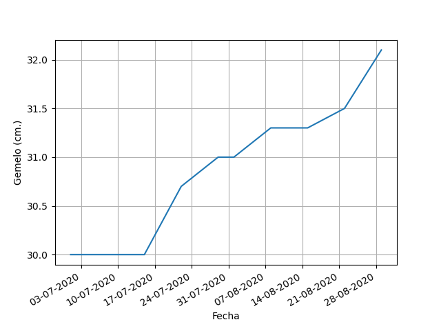
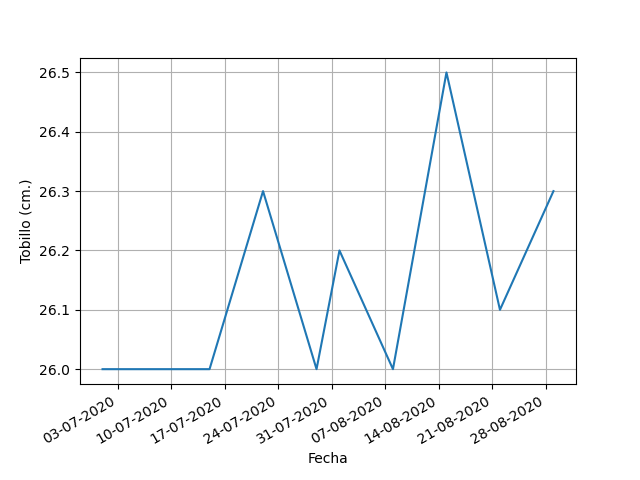

El ICC se ha usado como indicador o medición de la salud, y el riesgo de contraer enfermedades de salud serias.
También se relaciona con la fertilidad (con diferentes valores óptimos para hombres y mujeres):
El resultado es normal ya que está entre el 0.78 y el 0.94 estimado como normal para hombres.
El IC mide la corpulencia o delgadez de una persona.
Es muy usado en pediatría para la evaluación de si la restricción del crecimiento intrauterino de un niño es simétrica o asimétrica.
Se ha demostrado que el IC tiene mayor sensibilidad, especificidad, así como valores predictivos tanto positivos como negativos que el IMC tradicional.
El resultado se considera un valor típico pues el IC normal es de 12
El ICA es una medida de la distribución de la grasa corporal.
Valores más altos del ICA indican mayor riesgo de obesidad relacionado con enfermedades cardiovasculares correlacionadas con la obesidad abdominal.
Es más preciso que el índice de masa corporal (IMC) tradicional.
Categoría: Delgado Sano .
Ejemplo: Beyonce (0.3881) ó Kate Moss (0.3882)
El RFM arroja resultados similares a la prueba radiológica DEXA por lo que es muy precisa.
Es un procedimiento simple más conveniente que el porcentaje de grasa corporal y más preciso que el índice de masa corporal (IMC) tradicional.
Nivel de grasa: Saludable
El IAC da un resultado similar al Porcentaje de Grasa Corporal.
Mide la grasa esencial necesaria para realizar las funciones vitales, junto con la grasa de almacenamiento.
Nivel de grasa: Saludable
El TWB (en inglés) es una medida de la cantidad de litros de agua que poseemos en nuestro cuerpo, en relación con el peso total.
Es importante tener buenos niveles de agua para realizar una correcta homeostasis.
Tienes 46.8 litros de agua de un total de 78.0 kilos que pesas.
| Fecha | Peso (Kg.) | Altura (cm.) | Pecho (cm.) | Brazo (cm.) | Cintura (cm.) | Cadera (cm.) | Muslo (cm.) | Gemelo (cm.) | Tobillo (cm.) |
|---|---|---|---|---|---|---|---|---|---|
| 22-08-2020 | 79 | 186 | 97 | 35 | 77 | 97.5 | 56 | 31.5 | 26.1 |
| 29-08-2020 | 78 | 186 | 98 | 37 | 76.3 | 97.8 | 58.2 | 32.1 | 26.3 |
| 1 | 0 | -1 | -2 | 0.7 | -0.3 | -2.2 | -0.6 | -0.2 |








